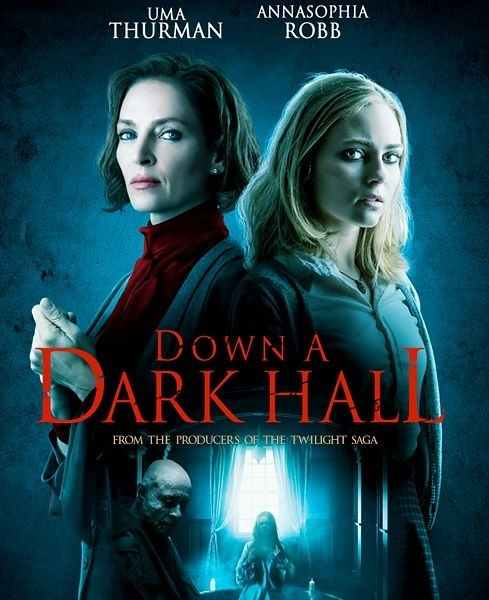
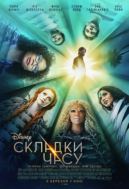
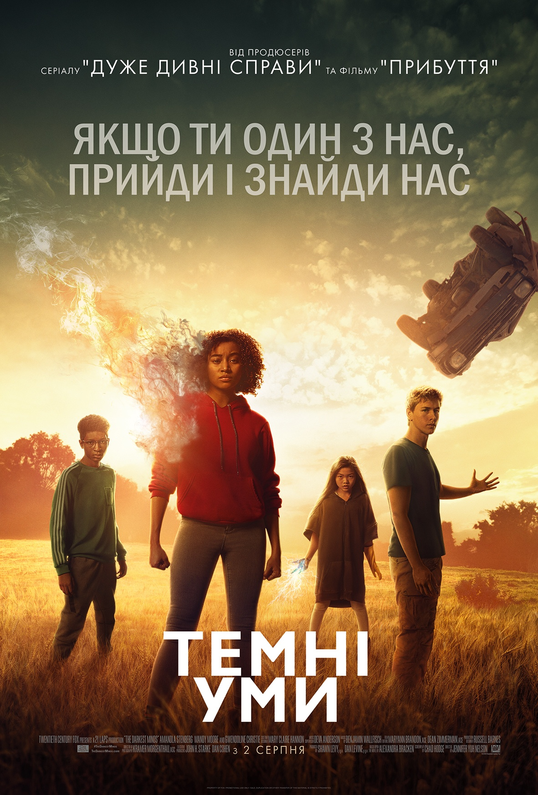

Далі по коридору

- Назва: Далі по коридору / Down a Dark Hall
- Режисер: Родриго Кортес
- Актори: Ума Турман, АннаCофія Робб, Ізабель Фюрман, Ребекка Фронт, Девід Элліот, Кірсті Мітчелл, Тейлор Расселл, Розі Дэй, Вікторія Моролес, Ной Сільвер
- Студія: Fickle Fish Films, Nostromo Pictures, Temple Hill Entertainment
- Прем’єра: 17.08.2018
- Тривалість: 96 хв
Опис:
Потрапивши в престижну школу-інтернат Блеквуда, нова студентка Кіт Горді досить швидко розуміє, що в закладі живуть надприродні сили. Володіючи твердим характером і рішучістю, вона вирішує кинути їм виклик ...
Складки часу

- Назва: Складки часу / Wrinkle time
- Режисер: Ава ДюВерней
- Актори: Сторм Рейд, Ґуґу Ембата-Ро, Кріс Пайн, Різ Візерспун, Опра Вінфрі, Мінді Калінґ, Леві Міллер, Дерік МакКейб, Зак Ґаліфіанакіс, Ровен Бланчард
- Студія: Walt Disney Pictures
- Прем’єра: 07.03.2018
- Тривалість: 109 хв
- Назва: Астрал: Темні уми / The Darkest Minds
- Режисер: Дженніфер Ю Нельсон
- Актори: Амандла Стенберґ, Гарріс Дікінсон, Менді Мур, Бредлі Вітфорд, Скайлан Брукс, Мія Чех, Ґвендолін Крісті, Марк О’Брайен, Вейд Вільямс, Семми Ротібі
- Студія: 20th Century Fox, 21 Laps Entertainment
- Прем’єра: 02.08.2018
- Тривалість: 105 хв
Опис:
Мег Муррі звикла до пошуку себе в цьому світі, до проблем з самооцінкою. Її батько-фізик безслідно зник в ході неймовірного наукового експерименту, і тепер дівчинка просто мріє його знову знайти. Гени батька видно в ній і в її молодшого брата - обидва обдаровані геніальним розумом, який поки не вдалося реалізувати. І ось до дівчинки приходить божевільна ідея подорожі по складкам часу, якщо це тільки можливо. Вона з братом і однокласником Кельвіном відправляються в неймовірні і дуже красиві світи, де зустрічають місіс Яка, місіс Хто і місіс Що-небудь. Вони прилетіли з далекого космосу, щоб допомогти друзям знайти містера Муррі. Подорожуючи між світами, які навіть уявити неможливо, вони мають безліч пригод, борються з сильним злом, яке завжди поруч. Сили, щоб побороти все це, потрібно шукати всередині себе - адже там такий же неосяжний світ.
Темні уми

Опис:
Майже всі підлітки на Землі померли від страшної та невідомої хвороби. Але ті, хто залишилися, кардинально змінилися – тепер кожен із них має суперсилу. Влада боїться могутніх підлітків, тому вирішують контролювати їх сили, відправивши всіх дітей до спеціальних таборів. Дівчинка шістнадцяти років на ім'я Руді є однією з найсильніших завдяки своїм суперсилам. Вона біжить з того страшного табору та знаходить таких же дітей-мандрівників, які просто хочуть втекти від влади та знайти спокійне місце для існування. Але у світі, де правлять дорослі, потрібно не бігти – потрібно боротися. Не дарма у них є суперсили.